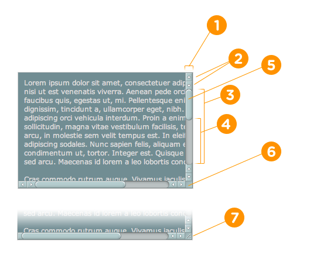

ScrollBar Styling
Pseudo-Elements (Actual Parts of Scrollbar)
::-webkit-scrollbar {}
::-webkit-scrollbar-button {}
::-webkit-scrollbar-track {}
::-webkit-scrollbar-track-piece {}
::-webkit-scrollbar-thumb {}
::-webkit-scrollbar-corner {}
::-webkit-resizer {}

Pseudo-Class-Selectors (More Specific Selection of Parts)
:horizontal
:vertical
:decrement
:increment
:start
:end
:double-button
:single-button
:no-button
:corner-present
:window-inactive
Explanation of Pseudo-Classes
- :horizontal – The horizontal pseudo-class applies to any scrollbar pieces that have a horizontal orientation.
- :vertical – The vertical pseudo-class applies to any scrollbar pieces that have a vertical orientation.
- :decrement – The decrement pseudo-class applies to buttons and track pieces. It indicates whether or not the button or track piece will decrement the view’s position when used (e.g., up on a vertical scrollbar, left on a horizontal scrollbar).
- :increment – The increment pseudo-class applies to buttons and track pieces. It indicates whether or not a button or track piece will increment the view’s position when used (e.g., down on a vertical scrollbar, right on a horizontal scrollbar).
- :start – The start pseudo-class applies to buttons and track pieces. It indicates whether the object is placed before the thumb.
- :end – The end pseudo-class applies to buttons and track pieces. It indicates whether the object is placed after the thumb.
- :double-button – The double-button pseudo-class applies to buttons and track pieces. It is used to detect whether a button is part of a pair of buttons that are together at the same end of a scrollbar. For track pieces it indicates whether the track piece abuts a pair of buttons.
- :single-button – The single-button pseudo-class applies to buttons and track pieces. It is used to detect whether a button is by itself at the end of a scrollbar. For track pieces it indicates whether the track piece abuts a singleton button.
- :no-button – Applies to track pieces and indicates whether or not the track piece runs to the edge of the scrollbar, i.e., there is no button at that end of the track.
- :corner-present – Applies to all scrollbar pieces and indicates whether or not a scrollbar corner is present.
- :window-inactive – Applies to all scrollbar pieces and indicates whether or not the window containing the scrollbar is currently active. (In recent nightlies, this pseudo-class now applies to ::selection as well. We plan to extend it to work with any content and to propose it as a new standard pseudo-class.)